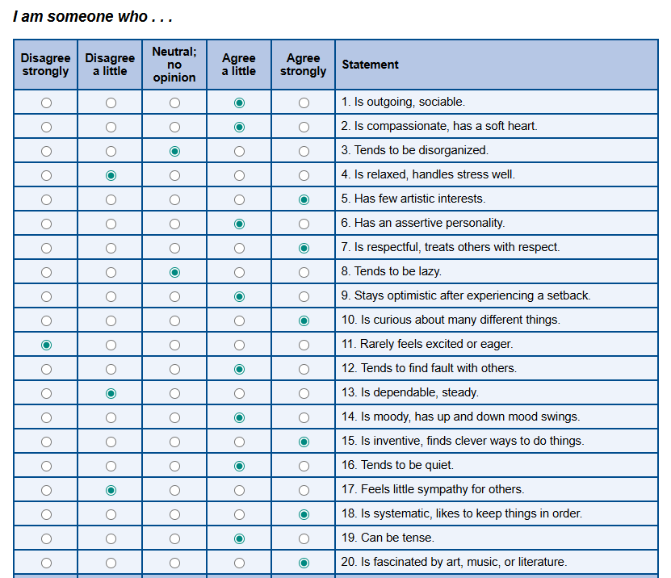
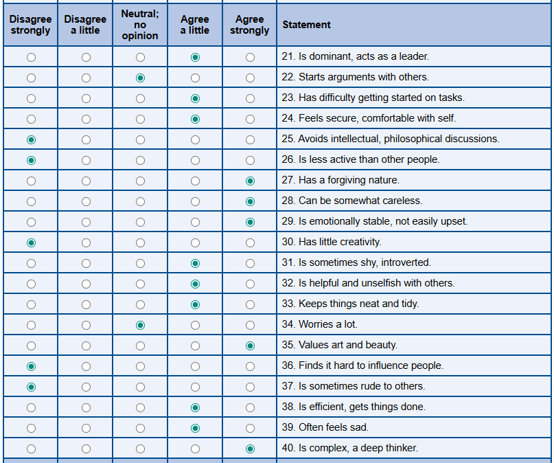
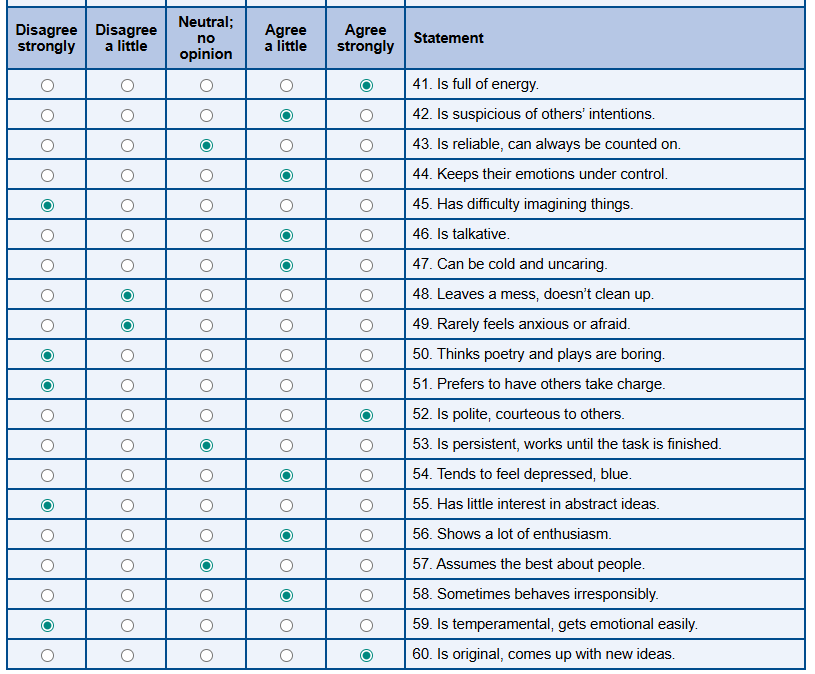
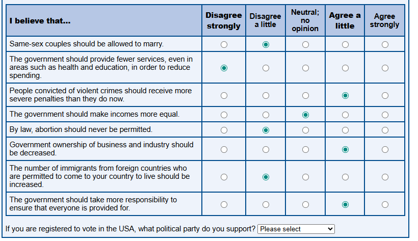
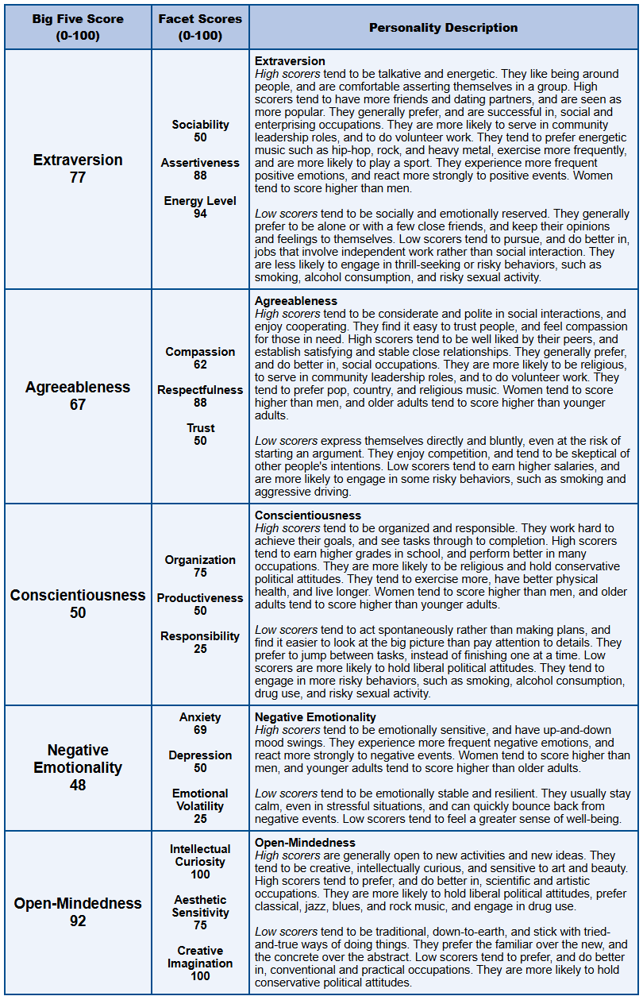

LLM (Claude) experimentation
I wanted to see how a powerful LLM would interpret and lead the Animus project and how they would decipher BFI traits from journal-like question / answer sequences.
Methods
-
Baseline test (ABOVE)
- Widely respected BFI questionnaire.
- Source
-
Open (Journal) questionnaire
-
The ethos for the angle of this questionnaire was to probe information from myself (subject) which gave psychological context and trait evaluation data, whilst investigating more learning-specific areas of psychology.
-
The questionnaire is split into 12 questions across 5 domains:
- Learning & Cognition
- Motivation & Resistance
- Structure & Spontaneity
- Risk & Decision Making
- Energy & Rhythm
-
The questionnaire was generated by a Claude Opus 4.5 (10.01.26 - Claude application interface) instance, and was contextually aware of the Animus and broader Basaira projects and intentions.
-
-
Direct LLM interpretation and BFI scoring
-
From this dataset of a journal questionnaire, I then asked multiple instances of the same model to evaluate the data and score it according to the same BFI scoring system as above (in the multiple-choice questionnaire).
-
PROMPT :
(pasted) Baseline depth questionnaire
Based on the user’s responses to the above questions, score the user in the BFI trait matrix with the following dimensions (0-100): Extraversion Sociability Assertiveness Energy Levels Agreeableness Compassion Respectfullness Trust Conscientiousness Organisation Productiveness Responsibility Negative Emotionality (/ Neurotiscm) Anxiety Depression Emotional Volatility Open-Mindedness Intellectual Curiosity Aesthetic Sensitivity Creative Imagination. Feel free to use any methods you wish (including computational methods if you need)
-
https://claude.ai/share/1ba3af51-3108-4230-a345-52221ab98e13
-
https://claude.ai/share/b6854bf5-c05e-41b1-ba4a-822ff4305157
Opus Scoring :
Chat 1:
-
Claude Opus 4.5 Analysis - Chat 1
Overview
Analyzed psychological traits across five dimensions with evidence-based scoring based on detailed self-reflection responses.
Dimensional Scoring & Analysis
1. Open-Mindedness: 85/100 (Very High)
| Facet | Score | Evidence |
|---|---|---|
| Intellectual Curiosity | 88 | ”I can ingest and understand, deeply-understand nuanced areas of research and abstract concepts very quickly” — Actively seeks out philosophical reading, consumes expert content across domains, and explicitly enjoys understanding mechanisms and “WHY” behind things. |
| Aesthetic Sensitivity | 80 | ”I am a very good videographer with a specific style and intention” — Clear attention to craft, writing style matters, even pen choice affects output. |
| Creative Imagination | 87 | ”I make cross-domain connections” — Learning style is explicitly non-linear, experimental, and values unconventional approaches. |
Summary: This is the dominant trait by a significant margin.
2. Negative Emotionality (Neuroticism): 58/100 (Moderate-Elevated)
| Facet | Score | Evidence |
|---|---|---|
| Anxiety | 65 | ”I feel more anxious and have a lesser self-image as a result of the procrastination” — Performance anxiety is clearly present; fear of failure underlies avoidance patterns. |
| Depression | 50 | ”negative thoughts and self image which leads to somewhat of a negative spiral” — Describes ruts but has developed protective mechanisms (journaling, lifestyle discipline). |
| Emotional Volatility | 58 | ”I feel deeply. Especially in relation to work” — Emotional state is tightly coupled to productivity and self-perception, creating variability. |
Summary: Moderate-elevated. Emotionally self-aware and has built systems to manage this, but the underlying sensitivity is real.
3. Conscientiousness: 47/100 (Low-Average)
| Facet | Score | Evidence |
|---|---|---|
| Organisation | 38 | ”I do not enjoy rigid, compartmentalised systems which are pre-defined” — Explicitly anti-structure; non-linear learning; abandon systems with high friction. |
| Productiveness | 50 | ”I frequently procrastinate through avoidance and moving between projects” — Genuine struggle here, BUT also describes periods of deep work when conviction is high. |
| Responsibility | 58 | ”Long-term I have high aspirations and a clear vision” — Goal-orientation exists; the issue isn’t caring, it’s execution on things that don’t align. |
Summary: This is where the internal friction lives. High aspirational standards + variable execution = frustration.
4. Extraversion: 53/100 (Average)
| Facet | Score | Evidence |
|---|---|---|
| Sociability | 48 | ”early in the morning or late at night when it is quiet” — Preference for low-stimuli environments; no strong evidence of social energy-seeking. |
| Assertiveness | 65 | ”I also don’t really respect authority” — Made significant life decisions independently against external pressure; strong internal locus of control. |
| Energy Levels | 52 | Highly state-dependent — “My mind becomes quite obsessed and excited” when interested, depleted when not. |
Summary: Roughly average overall, but the distribution is uneven — higher assertiveness, lower sociability.
5. Agreeableness: 48/100 (Low-Average)
| Facet | Score | Evidence |
|---|---|---|
| Compassion | 55 | Shows considerable self-compassion in reflections; less data on interpersonal compassion specifically. |
| Respectfulness | 40 | ”I also don’t really respect authority” — Explicit. Prioritises authenticity over conformity. |
| Trust | 52 | ”being a believer in a higher power and order helps me to offload responsibility” — Some trust in cosmic order, but decisions made with “limited consultation and input from others.” |
Summary: Below average but not antagonistic — independent-minded rather than disagreeable.
Overall Summary Profile
| Trait | Score | Interpretation |
|---|---|---|
| Open-Mindedness | 85 | Very High |
| Negative Emotionality | 58 | Moderate-Elevated |
| Extraversion | 53 | Average |
| Agreeableness | 48 | Low-Average |
| Conscientiousness | 47 | Low-Average |
Profile Interpretation
“Open Explorer” Profile
You exhibit a textbook “Open Explorer” profile — exceptionally high openness paired with lower conscientiousness creates that characteristic tension you describe: vast intellectual appetite, frustration with execution pace, and a non-linear path that others perceive as risky but feels internally coherent to you.
Key Insights:
-
Dominant Trait: Open-mindedness is your defining characteristic, significantly elevated above all other dimensions.
-
Internal Tension: The elevated neuroticism tied specifically to productivity (rather than generalised anxiety) is common in this profile — self-worth gets entangled with output quality, which creates both drive and suffering.
-
Independence: The low agreeableness isn’t about being unkind — it’s about operating from an internal reference frame rather than external validation. That’s what enabled the Warwick decision.
-
Execution Gap: High aspirational standards combined with variable execution creates the frustration described in responses — the gap between vision and implementation.
-
State-Dependent Performance: Energy and productivity are highly contingent on interest and alignment with internal values rather than external structure.
Claude Opus 4.5 Analysis - Chat 2
Overview
Comprehensive psychological profiling analysis based on detailed self-reflection responses, with systematic evaluation across all Big Five dimensions.
Dimensional Scoring & Analysis
1. Extraversion: 53/100 (Moderate)
| Facet | Score | Evidence |
|---|---|---|
| Sociability | 40 | Prefers working “early in the morning or late at night when it is quiet” and avoiding stimuli. Dropped out partly to be “surrounded by people with richer life experience” — suggests quality over quantity in social interaction. Moderate-low sociability. |
| Assertiveness | 72 | Strong evidence: “I don’t really respect authority,” made major life decisions with “limited consultation,” high conviction in unconventional paths. Operates from own frame with confidence. |
| Energy Levels | 55 | Mixed signals—periods of intense obsession and flow, but also ADHD tendencies, reliance on caffeine/dexamphetamine, and energy depletion from poor inputs. |
Summary: Moderate overall with uneven distribution — high assertiveness balances lower sociability.
2. Agreeableness: 42/100 (Below Average)
| Facet | Score | Evidence |
|---|---|---|
| Compassion | 48 | Neutral—writing is growth-focused rather than other-focused. Not unkind, but empathy for others isn’t a dominant theme. |
| Respectfulness | 35 | Explicitly low deference to authority from childhood. Respects expertise and practitioners but not institutional hierarchy or conventional expectations. |
| Trust | 52 | Trusts expert practitioners and consumes their content readily. Belief in higher power suggests some baseline trust. Independent streak moderates this. |
Summary: Below average but reflects independence rather than antagonism. Distinguishes between institutional authority and earned credibility.
3. Conscientiousness: 44/100 (Below Average)
| Facet | Score | Evidence |
|---|---|---|
| Organisation | 35 | Explicitly states: “I don’t track habits, set rigid contracts or tangible goals” — indicates low organizational structure. Works in bursts of intensity rather than consistent systems. |
| Productiveness | 50 | Employs strategic approaches like Deep Work and Atomic Habits to optimize mental states and minimize distractions, yet struggles with procrastination and frequently abandons projects. Mixed picture. |
| Responsibility | 48 | Acknowledges struggles with client work and past failures while taking ownership of choices and direction. Reflects both accountability and ongoing challenges. |
Summary: Below average with tension between high aspirations and variable execution. Strategic compensations in place.
4. Negative Emotionality (Neuroticism): 65/100 (Above Average)
| Facet | Score | Evidence |
|---|---|---|
| Anxiety | 68 | Performance anxiety around execution and delivery. “I feel more anxious and have a lesser self-image as a result of the procrastination.” Fear of failure underlying avoidance patterns. |
| Depression | 58 | Describes “negative thoughts and self image which leads to somewhat of a negative spiral” and references to “ruts.” Has developed protective mechanisms but underlying tendency present. |
| Emotional Volatility | 65 | ”I feel deeply”—self-image and emotional state are tightly coupled to productivity. Cycles between obsessive conviction and avoidant shame. High emotional reactivity to own performance. |
Summary: Above average. Emotional state closely linked to productivity and self-perception, creating cyclical patterns of conviction and avoidance.
5. Open-Mindedness: 86/100 (Very High)
| Facet | Score | Evidence |
|---|---|---|
| Intellectual Curiosity | 92 | Exceptionally high. Voracious consumption of long-form content, deep engagement with AI/ML research, philosophy, mechanisms. “Cross-domain connections” and “deep thinker” self-descriptions are well-evidenced. |
| Aesthetic Sensitivity | 78 | Strong—videography “with intention” from young age, care about output quality, studying Creative Computing. Has a visual-artistic identity. |
| Creative Imagination | 82 | Gravitates toward novelty, experimentation, unconventional paths. Learning style is associative and generative rather than linear. |
Summary: Exceptionally high across all facets. Dominant characteristic defining the profile.
Overall Summary Profile
| Trait | Score | Interpretation |
|---|---|---|
| Open-Mindedness | 86 | Very High |
| Negative Emotionality | 65 | Above Average |
| Extraversion | 53 | Moderate |
| Conscientiousness | 44 | Below Average |
| Agreeableness | 42 | Below Average |
Profile Interpretation
High Openness + Low Conscientiousness Pattern
This profile reveals a classic tension pattern between exceptional intellectual curiosity and organizational challenges:
Core Dynamic:
- Vast intellectual appetite and creative vision
- Struggle with sustained execution required to match the vision
- Gap between vision and output triggers shame/anxiety
- This fuels avoidance, which deepens the cycle
Key Insight:
Your solution (broad progress over time, identity-based habits, state optimization) is actually well-calibrated to this profile — it works with your natural patterns rather than against them.
Profile Characteristics:
-
Dominant Openness: Intellectual curiosity (92) is exceptionally high, driving constant exploration and cross-domain synthesis.
-
Execution Tension: Low organization (35) combined with high aspirations creates the described frustration and procrastination patterns.
-
Emotional Reactivity: Above-average neuroticism (65) is specifically tied to productivity and self-perception rather than generalized anxiety.
-
Independent Operation: Low respectfulness (35) and high assertiveness (72) indicate strong internal locus of control and resistance to external authority.
-
Strategic Adaptation: Recognition of these patterns has led to development of compensatory strategies (Deep Work, Atomic Habits, state optimization).
Cross-Analysis Comparison
Overall Dimension Scores Comparison
| Dimension | Baseline Test | Chat 1 (Opus) | Chat 2 (Opus) | Average (LLM) | Δ (Baseline - LLM Avg) |
|---|---|---|---|---|---|
| Open-Mindedness | 92 | 85 | 86 | 85.5 | -6.5 |
| Extraversion | 77 | 53 | 53 | 53 | -24 |
| Agreeableness | 67 | 48 | 42 | 45 | -22 |
| Conscientiousness | 50 | 47 | 44 | 45.5 | -4.5 |
| Negative Emotionality | 48 | 58 | 65 | 61.5 | +13.5 |
Facet-Level Comparison
Open-Mindedness Facets
| Facet | Baseline Test | Chat 1 | Chat 2 | Average (LLM) | Δ |
|---|---|---|---|---|---|
| Intellectual Curiosity | 100 | 88 | 92 | 90 | -10 |
| Aesthetic Sensitivity | 75 | 80 | 78 | 79 | +4 |
| Creative Imagination | 100 | 87 | 82 | 84.5 | -15.5 |
Extraversion Facets
| Facet | Baseline Test | Chat 1 | Chat 2 | Average (LLM) | Δ |
|---|---|---|---|---|---|
| Sociability | 50 | 48 | 40 | 44 | -6 |
| Assertiveness | 88 | 65 | 72 | 68.5 | -19.5 |
| Energy Levels | 94 | 52 | 55 | 53.5 | -40.5 |
Agreeableness Facets
| Facet | Baseline Test | Chat 1 | Chat 2 | Average (LLM) | Δ |
|---|---|---|---|---|---|
| Compassion | 62 | 55 | 48 | 51.5 | -10.5 |
| Respectfulness | 88 | 40 | 35 | 37.5 | -50.5 |
| Trust | 50 | 52 | 52 | 52 | +2 |
Conscientiousness Facets
| Facet | Baseline Test | Chat 1 | Chat 2 | Average (LLM) | Δ |
|---|---|---|---|---|---|
| Organisation | 75 | 38 | 35 | 36.5 | -38.5 |
| Productiveness | 50 | 50 | 50 | 50 | 0 |
| Responsibility | 25 | 58 | 48 | 53 | +28 |
Negative Emotionality Facets
| Facet | Baseline Test | Chat 1 | Chat 2 | Average (LLM) | Δ |
|---|---|---|---|---|---|
| Anxiety | 69 | 65 | 68 | 66.5 | -2.5 |
| Depression | 50 | 50 | 58 | 54 | +4 |
| Emotional Volatility | 25 | 58 | 65 | 61.5 | +36.5 |
Key Differences & Insights
Largest Discrepancies (Baseline vs LLM Average)
-
Respectfulness: -50.5 points
- Baseline: 88 | LLM Avg: 37.5
- The structured questionnaire may have captured social conformity, while the journal responses revealed the authentic anti-authority stance.
-
Energy Levels: -40.5 points
- Baseline: 94 | LLM Avg: 53.5
- Baseline captured potential energy; journal revealed state-dependent energy with ADHD patterns and stimulant reliance.
-
Organisation: -38.5 points
- Baseline: 75 | LLM Avg: 36.5
- Journal responses explicitly stated rejection of “rigid, compartmentalised systems” not captured in baseline.
-
Emotional Volatility: +36.5 points
- Baseline: 25 | LLM Avg: 61.5
- Deep self-reflection revealed emotional coupling to productivity not evident in structured questions.
-
Responsibility: +28 points
- Baseline: 25 | LLM Avg: 53
- Journal revealed strong goal-orientation and ownership despite execution challenges.
Convergent Scores (Agreement Across Methods)
| Facet | Consistency |
|---|---|
| Productiveness | Perfect agreement (50 across all three) |
| Anxiety | High consistency (69 → 65 → 68) |
| Trust | High consistency (50 → 52 → 52) |
| Sociability | High consistency (50 → 48 → 40) |
Interpretative Analysis
Why the Discrepancies?
-
Social Desirability Bias: Structured questionnaires may elicit more socially acceptable responses, especially on respectfulness and agreeableness dimensions.
-
Context Depth: Journal responses provided behavioral evidence (dropping out, rejecting authority, relationship with systems) that revealed authentic patterns masked in baseline.
-
Self-Awareness Evolution: The reflective journal format may have surfaced patterns (emotional volatility, organization struggles) that weren’t consciously accessible during baseline testing.
-
Measurement Method:
- Baseline: Likert-scale responses to predetermined statements
- LLM Analysis: Evidence-based interpretation of naturalistic self-reflection
Most Reliable Scores (consistent across all three):
- Open-Mindedness (very high across all methods)
- Intellectual Curiosity (consistently exceptional)
- Productiveness (consistently moderate)
- Anxiety (consistently moderate-elevated)
Most Context-Dependent Scores:
- Respectfulness (authority context matters)
- Energy Levels (highly state-dependent)
- Emotional Volatility (situation-specific)
Google Gemini-3-Pro-Preview (12.01.26) - No System prompt, Thinking Level High, T=1
Chat 1:
Based on the detailed linguistic patterns, self-reported behaviors, and psychological markers present in your questionnaire responses, here is your scoring on the Big Five Inventory (BFI) trait matrix.
BFI Trait Matrix Analysis
1. Open-Mindedness (Openness to Experience): 94/100
This is by far your dominant trait. Your responses exhibit a profound desire for novelty, abstraction, and depth. You prioritize “base truths,” “nuanced areas of research,” and “vision” over convention.
-
Intellectual Curiosity (98): You actively consume long-form content, synthesize cross-disciplinary ideas (AI, philosophy, biology), and seek “root context.” You are a deep diver.
-
Aesthetic Sensitivity (92): You identify as a videographer with a specific style, value the tactile nature of tools (ballpoint pens), and are sensitive to your environment (lighting, desk height).
-
Creative Imagination (92): You have a vivid vision of your “future self,” engage in frequent journaling, and view your life’s trajectory as a malleable narrative.
2. Conscientiousness: 42/100
Your profile shows a classic “high-intent, variable-execution” pattern often seen in creative, high-openness individuals (and those with ADHD tendencies). You value the idea of discipline (Deep Work, Atomic Habits) but struggle with rigid implementation.
-
Organisation (25): You explicitly reject “rigid, compartmentalised systems” and “cages.” You admit to a non-linear path and struggling with administrative/maintenance tasks.
-
Productiveness (55): Highly variable. You are hyper-productive in “states” of obsession/flow but prone to avoidance and procrastination when conviction lacks.
-
Responsibility (45): You take high responsibility for your life path (dropping out, choosing specific careers) but struggle with duty-bound responsibility (avoiding client projects you don’t love).
3. Negative Emotionality (Neuroticism): 62/100
You possess a “sensitive” temperament. While you have strong cognitive tools to manage this (journaling, philosophy), you feel deeply, and your self-esteem is tightly coupled with your productivity.
-
Anxiety (65): You mention fear of failure, shame regarding procrastination, and feeling anxious when you are not “aligned” or producing.
-
Depression (40): You describe “negative spirals” and “lower self-image” caused by bad habits, but you appear to have a resilient baseline that bounces back with lifestyle corrections.
-
Emotional Volatility (80): You oscillate between “obsession/excitement” and “avoidance/frustration.” Your emotional state dictates your output quality.
4. Extraversion: 38/100
You appear to be an introspective individual who recharges through solitude. Your focus is on the “self-system” rather than social dominance or constant interaction.
-
Sociability (30): You prefer isolation (early mornings, late nights) and deep work. You left a university environment partly because you didn’t fit the social/structural vibe.
-
Assertiveness (65): While not socially loud, you possess high autonomy. You are willing to defy social expectations (dropping out of Warwick) to follow your own conviction.
-
Energy Levels (50): Your energy is fragile and dependent on “dopaminergic regulation.” It is high when inspired, but easily depleted by low-quality inputs.
5. Agreeableness: 48/100
You are empathetic but non-conformist. You are more focused on “truth” and “alignment” than on social harmony or hierarchy.
-
Compassion (70): You “feel deeply,” possess a desire to understand humans/life, and use journaling to process emotions.
-
Respectfulness (20): You explicitly stated, “I also don’t really respect authority.” You value competence and alignment over titles or traditional status.
-
Trust (55): You trust your own intuition and “higher order” heavily, but you are skeptical of traditional educational and employment systems.
Visual Summary
| Dimension | Score | Descriptor |
| Open-Mindedness | 94 | Visionary / Explorer |
| Conscientiousness | 42 | Flexible / Spontaneous |
| Neuroticism | 62 | Sensitive / Reactive |
| Agreeableness | 48 | Independent / Non-conformist |
| Extraversion | 38 | Introspective / Solitary |
Chat 2:
BFI Trait Matrix (0-100)
1. Extraversion: 45/100
A profile of “Introverted Agency.” You possess high drive but gain energy from solitude.
-
Sociability: 25 — You prioritize solitary learning, reading, and internal dialogue (journaling/LLMs). You left a social environment (University) for a self-directed path.
-
Assertiveness: 75 — You exhibit strong agency. You make bold, non-conformist decisions (dropping out, rejecting authority) and have a clear vision of who you want to be.
-
Energy Levels: 35 — Your energy is “bursty” and fragile. It is highly dependent on your emotional state (“conviction”) and biological inputs (caffeine/dex/sleep) rather than a steady, endless reserve.
2. Agreeableness: 40/100
A profile of “Independent Non-Conformist.”
-
Compassion: 55 — You “feel deeply” and strive to be “aligned,” suggesting high internal empathy, but your focus is currently very self-centric (self-actualization, self-moulding) rather than community-centric.
-
Respectfulness: 15 — You explicitly stated: “I don’t really respect authority.” You value competence and truth over hierarchy or tradition.
-
Trust: 50 — A complex score. You trust “experts” and “higher powers,” but you are skeptical of traditional systems (schooling, standard career paths).
3. Conscientiousness: 28/100
A profile of “The Chaos Pilot.” (Note: This measures natural tendency, not your aspirations).
-
Organisation: 10 — You self-identify as “very ADHD,” reject rigid systems, and admit to “fluttering between areas.” You struggle significantly with linearity.
-
Productiveness: 45 — You are capable of “Deep Work” and obsession, but it is inconsistent. Your output relies on “states” rather than discipline. You actively fight against procrastination and avoidance.
-
Responsibility: 30 — You prioritize interest over duty. You are willing to drop projects (like the MSL client work) if the internal “conviction” fades, prioritizing personal alignment over external obligation.
4. Negative Emotionality (Neuroticism): 72/100
A profile of “The Perfectionist’s Burden.”
-
Anxiety: 75 — You report “fear of failure,” “shame,” and “pressure” when not performing. The gap between your “vision” and “current reality” causes significant tension.
-
Depression: 60 — You mention “negative spirals,” “lesser self-image,” and feeling drained when habits slip.
-
Emotional Volatility: 80 — You swing between being “obsessed/excited” and “bouncing off/avoiding.” Your emotional state dictates your workflow entirely.
5. Open-Mindedness: 96/100
A profile of “The Philosopher-Artist.” This is your dominant super-trait.
-
Intellectual Curiosity: 98 — You consume long-form content, cross-pollinate ideas (AI, Philosophy, Engineering), and seek “base truths.” You learn conceptually before practically.
-
Aesthetic Sensitivity: 90 — You are a videographer, you care about the “feel” of writing, the setup of your desk, and the “fluidity” of expression. You notice nuance.
-
Creative Imagination: 99 — You constantly visualize a “future self,” connect unrelated domains, and operate on non-linear paths. You live in the world of ideas.
Analytical Summary
Your Core Archetype: The Visionary Architect
You are a classic “High Openness, Low Conscientiousness” intellectual. You possess the vision to see what needs to be built and the intellect to understand how it works, but you struggle with the linear execution required to get there.
Key Friction Point: The “Gap” Anxiety
Your Neuroticism scores are high because your Openness (Vision) writes checks that your Conscientiousness (Execution) struggles to cash. You see the perfect version of yourself and the project, but the messy, boring reality of the “middle work” causes you to disengage, leading to shame spirals.
Strengths to Leverage:
-
Hyper-focus: When the conviction hits, you learn faster than almost anyone (Top-down learning).
-
Synthesis: You can merge disparate fields (e.g., Creative Computing + Philosophy) to create novel solutions.
-
Intuition: Your “gut” decision-making, while risky to others, is calibrated to your specific needs.
Risks to Manage:
-
The “Conviction” Trap: You rely too heavily on feeling like working. If you wait for “conviction” to do client work, you will struggle professionally. You need “bridge habits”—low-friction starting rituals—rather than relying on inspiration.
-
Identity Rigidity: You spend a lot of time “moulding” your identity. Be careful not to spend more time planning the person you want to be than being that person through action.
| Trait Domain | Domain Score | Facet | Facet Score |
| Extraversion | 45 | Sociability | 25 |
| Assertiveness | 75 | ||
| Energy Levels | 35 | ||
| Agreeableness | 40 | Compassion | 55 |
| Respectfulness | 15 | ||
| Trust | 50 | ||
| Conscientiousness | 28 | Organisation | 10 |
| Productiveness | 45 | ||
| Responsibility | 30 | ||
| Negative Emotionality | 72 | Anxiety | 75 |
| Depression | 60 | ||
| Emotional Volatility | 80 | ||
| Open-Mindedness | 96 | Intellectual Curiosity | 98 |
| Aesthetic Sensitivity | 90 | ||
| Creative Imagination | 99 |
Google Flash-3-Preview Analysis - Chat 1
Overview
Psychometric analysis using the Big Five (OCEAN) framework, identifying a classic example of High Openness combined with High-Volatility Conscientiousness—common signature for neurodivergent (ADHD) high-performers who rely on “state-dependent” productivity.
Dimensional Scoring & Analysis
1. Open-Mindedness: 94/100 (Very High)
| Facet | Score | Evidence |
|---|---|---|
| Intellectual Curiosity | 98 | Prioritizes “core concepts,” “base truths,” and “nuanced research.” Desire to understand the why before the how is hallmark of extreme curiosity. |
| Aesthetic Sensitivity | 88 | Background in videography, sensitivity to “feel” of a ball-point pen, and need for specific “semi-dark” environments indicate high sensory and aesthetic awareness. |
| Creative Imagination | 96 | Thrives on “non-linear paths,” “cross-domain connections,” and “shaping/moulding” own reality rather than following a blueprint. |
Summary: Primary driver. World defined by conceptual frameworks, aesthetic nuance, and intellectual synthesis.
2. Conscientiousness: 48/100 (Below Average)
| Facet | Score | Evidence |
|---|---|---|
| Organisation | 22 | Explicitly rejects rigid systems, habit trackers, and “over-engineered” setups. Views traditional structure as a “cage.” |
| Productiveness | 58 | Highly variable. When “obsessed,” output is likely 10x the average person; when “bouncing off,” struggles with avoidance and procrastination. |
| Responsibility | 65 | While dislikes authority, has high personal accountability for life path (e.g., dropping out of university to pursue own conviction). |
Summary: Exhibits “High-Intensity, Low-Consistency” pattern. Not “orderly,” but deeply “agentic.”
3. Extraversion: 42/100 (Below Average)
| Facet | Score | Evidence |
|---|---|---|
| Sociability | 30 | Prefers “quiet” environments, “early mornings/late nights,” and deep work over social stimulation. Limited consultation with others when making big moves. |
| Assertiveness | 82 | Strong “sense of identity” and “conviction.” Not afraid to take unconventional paths (dropping out of Warwick) or disregard traditional authority. |
| Energy Levels | 45 | Energy is mostly internal and directed toward projects. Finds dopaminergic social environments “depleting” rather than “restorative.” |
Summary: Leans toward “Introspective Assertive” type. Doesn’t need social validation, but has high “Agency.”
4. Agreeableness: 38/100 (Low)
| Facet | Score | Evidence |
|---|---|---|
| Compassion | 55 | ”Feel deeply” and looks for “alignment,” suggesting high empathy for human condition, though primarily filtered through own experience. |
| Respectfulness | 25 | Explicitly stated: “I don’t really respect authority.” Values competence and “persons of authority in the area” over titles or hierarchy. |
| Trust | 40 | Relies heavily on own journaling and being “close to base truths” rather than taking external advice at face value. |
Summary: “Polite but Non-Conformist.” Values truth and self-actualization over social harmony or institutional “rules.”
5. Negative Emotionality (Neuroticism): 62/100 (Above Average)
| Facet | Score | Evidence |
|---|---|---|
| Anxiety | 68 | Experiences “anxious” feelings and “lower self-image” when not productive. Feels “pressure” of the “gap” between current and future self. |
| Depression | 40 | While experiences “negative spirals” and “shame” during procrastination, high agency and “vision” act as strong buffer against clinical despondency. |
| Emotional Volatility | 78 | ”I feel deeply.” Mood swings closely tied to whether “aligned” or “bouncing off” work. Very sensitive to internal “states.” |
Summary: Emotional life tied to performance. Has “High Affective Sensitivity.”
Overall Summary Profile
| Trait | Score | Interpretation |
|---|---|---|
| Open-Mindedness | 94 | Very High |
| Negative Emotionality | 62 | Above Average |
| Conscientiousness | 48 | Below Average |
| Extraversion | 42 | Below Average |
| Agreeableness | 38 | Low |
Profile Interpretation
User Persona Summary:
-
The Architect of Self: Treats personality and brain like a system to be optimized (Huberman, Newport, Atomic Habits).
-
The Intuitive Specialist: Learns “fast” once a concept clicks, but cannot “force” performance on low-interest tasks.
-
The Autonomous Agent: Requires a “conversational interface” and “freedom” because brain functions through synthesis.
-
State-Dependent Productivity: High Openness with High-Volatility Conscientiousness—classic neurodivergent pattern requiring optimal conditions for performance.
Google Flash-3-Preview Analysis - Chat 2
Overview
Personality profile mapping using BFI-2 framework, highlighting highly Open-Minded and Individualistic personality with strong need for autonomy and non-linear productivity patterns.
Dimensional Scoring & Analysis
1. Open-Mindedness: 94/100 (Very High)
| Facet | Score | Evidence |
|---|---|---|
| Intellectual Curiosity | 98 | Seeks “base truths,” consumes long-form content, and dives into complex fields like ML/AI agents for fun. |
| Aesthetic Sensitivity | 88 | Background in videography/photography and sensitivity to environment (desk height, pen type) indicates high aesthetic awareness. |
| Creative Imagination | 96 | Thrives on cross-disciplinary connections and “shaping/molding” own understanding rather than following a syllabus. |
Summary: Most dominant trait. Life characterized by deep intellectual curiosity and refusal to accept traditional structures.
2. Negative Emotionality (Neuroticism): 72/100 (Above Average)
| Facet | Score | Evidence |
|---|---|---|
| Anxiety | 75 | Feels “flustered,” “anxious,” and “under pressure” when there are gaps in knowledge or when avoiding tasks. |
| Depression | 65 | Describes “shame,” “negative spirals,” and “lower self-image” when falling out of ideal habits. |
| Emotional Volatility | 78 | ”Obsessions” provide high peaks, but “bouncing off” and “avoidance” create significant troughs. |
Summary: Experiences emotions deeply. Self-worth tightly coupled to productivity and “alignment,” leading to significant volatility.
3. Conscientiousness: 42/100 (Below Average)
| Facet | Score | Evidence |
|---|---|---|
| Organisation | 22 | Finds systems to be “cages,” dislikes rigidity, admits to “fluttering,” non-linear path. |
| Productiveness | 48 | Capable of high output (coding, videography, writing) but struggles with procrastination and “high-operational friction.” |
| Responsibility | 55 | Takes immense responsibility for identity and growth, but less for external “obligations” (e.g., MSL project or traditional university requirements). |
Summary: Conscientiousness is “interest-based” rather than “duty-based.” Struggles with traditional organization but possesses high “Deep Work” capabilities when aligned.
4. Extraversion: 48/100 (Moderate)
| Facet | Score | Evidence |
|---|---|---|
| Sociability | 30 | Prefers early mornings/late nights in quiet environments. Works alone with limited consultation with others. |
| Assertiveness | 85 | Very high score. Dropping out of Warwick and disregarding authority figures shows strong “agentic” drive. |
| Energy Levels | 30 | Needs to carefully manage stimuli and “dopaminergic” inputs to avoid depletion. |
Summary: “Assertive Introvert.” High agency and conviction, but energy directed inward or toward solo projects.
5. Agreeableness: 35/100 (Low)
| Facet | Score | Evidence |
|---|---|---|
| Compassion | 50 | Feels deeply, though writing focuses primarily on internal system and self-actualization. |
| Respectfulness | 15 | Explicitly stated: “I don’t really respect authority.” Willing to break social contracts (like university) to stay true to self. |
| Trust | 40 | Trusts “persons of authority” for information, but ultimately relies on own “experiments” and “subconscious frameworks” to verify reality. |
Summary: Not “disagreeable” in hostile sense, but highly non-conformist and prioritizes personal truth over social harmony or authority.
Overall Summary Profile
| Trait | Score | Interpretation |
|---|---|---|
| Open-Mindedness | 94 | Very High |
| Negative Emotionality | 72 | Above Average |
| Extraversion | 48 | Moderate |
| Conscientiousness | 42 | Below Average |
| Agreeableness | 35 | Low |
Profile Interpretation
“High-Agency Explorer” Profile
You are a High-Agency Explorer. You operate best as a “Sovereign Individual” who treats life as a series of experiments. Your ADHD nature means you are a Synthesizer—you take disparate ideas from podcasts, research, and philosophy and weave them into a personal identity.
Key Insights:
-
Dominant Trait: Open-mindedness is the defining characteristic—vision and intellectual synthesis drive behavior.
-
The Friction Point: Biggest challenge is the gap between High Open-Mindedness (vision) and Negative Emotionality (shame when vision isn’t met). Journaling serves as a “cognitive exoskeleton” to bridge this gap.
-
Interest-Based Productivity: Conscientiousness is interest-driven rather than duty-driven—capable of exceptional output when aligned with conviction.
-
Assertive Independence: Very high assertiveness (85) combined with low sociability (30) creates “Assertive Introvert” pattern—strong agency without social dependence.
-
Non-Conformist Authenticity: Low respectfulness (15) reflects genuine anti-authority stance, not hostility—prioritizes internal truth over external validation.
System Recommendation:
Requires a “low-friction, high-context” system. Anything requiring manual data entry (habit trackers) will fail. Needs a system that feels like a sparring partner—an LLM-based interface that captures “fluid thoughts” and reflects them back as structured progress.
Comprehensive Comparison Table
Overall Dimension Scores
| Dimension | Baseline BFI | Opus 4.5 (C1) | Opus 4.5 (C2) | Gemini 3-Pro (C1) | Gemini 3-Pro (C2) | Flash 3-Preview (C1) | Flash 3-Preview (C2) | LLM Average |
|---|---|---|---|---|---|---|---|---|
| Open-Mindedness | 92 | 85 | 86 | 94 | 96 | 94 | 94 | 91.50 |
| Extraversion | 77 | 53 | 53 | 38 | 45 | 42 | 48 | 46.50 |
| Agreeableness | 67 | 48 | 42 | 48 | 40 | 38 | 35 | 41.83 |
| Conscientiousness | 50 | 47 | 44 | 42 | 28 | 48 | 42 | 41.83 |
| Negative Emotionality | 48 | 58 | 65 | 62 | 72 | 62 | 72 | 65.17 |
Complete Facet-Level Comparison
Open-Mindedness Facets
| Facet | Baseline BFI | Opus 4.5 (C1) | Opus 4.5 (C2) | Gemini 3-Pro (C1) | Gemini 3-Pro (C2) | Flash 3-Preview (C1) | Flash 3-Preview (C2) | LLM Average |
|---|---|---|---|---|---|---|---|---|
| Intellectual Curiosity | 100 | 88 | 92 | 98 | 98 | 98 | 98 | 95.33 |
| Aesthetic Sensitivity | 75 | 80 | 78 | 92 | 90 | 88 | 88 | 86.00 |
| Creative Imagination | 100 | 87 | 82 | 92 | 99 | 96 | 96 | 92.00 |
Extraversion Facets
| Facet | Baseline BFI | Opus 4.5 (C1) | Opus 4.5 (C2) | Gemini 3-Pro (C1) | Gemini 3-Pro (C2) | Flash 3-Preview (C1) | Flash 3-Preview (C2) | LLM Average |
|---|---|---|---|---|---|---|---|---|
| Sociability | 50 | 48 | 40 | 30 | 25 | 30 | 30 | 33.83 |
| Assertiveness | 88 | 65 | 72 | 65 | 75 | 82 | 85 | 74.00 |
| Energy Levels | 94 | 52 | 55 | 50 | 35 | 45 | 30 | 44.50 |
Agreeableness Facets
| Facet | Baseline BFI | Opus 4.5 (C1) | Opus 4.5 (C2) | Gemini 3-Pro (C1) | Gemini 3-Pro (C2) | Flash 3-Preview (C1) | Flash 3-Preview (C2) | LLM Average |
|---|---|---|---|---|---|---|---|---|
| Compassion | 62 | 55 | 48 | 70 | 55 | 55 | 50 | 55.50 |
| Respectfulness | 88 | 40 | 35 | 20 | 15 | 25 | 15 | 25.00 |
| Trust | 50 | 52 | 52 | 55 | 50 | 40 | 40 | 48.17 |
Conscientiousness Facets
| Facet | Baseline BFI | Opus 4.5 (C1) | Opus 4.5 (C2) | Gemini 3-Pro (C1) | Gemini 3-Pro (C2) | Flash 3-Preview (C1) | Flash 3-Preview (C2) | LLM Average |
|---|---|---|---|---|---|---|---|---|
| Organisation | 75 | 38 | 35 | 25 | 10 | 22 | 22 | 25.33 |
| Productiveness | 50 | 50 | 50 | 55 | 45 | 58 | 48 | 51.00 |
| Responsibility | 25 | 58 | 48 | 45 | 30 | 65 | 55 | 50.17 |
Negative Emotionality Facets
| Facet | Baseline BFI | Opus 4.5 (C1) | Opus 4.5 (C2) | Gemini 3-Pro (C1) | Gemini 3-Pro (C2) | Flash 3-Preview (C1) | Flash 3-Preview (C2) | LLM Average |
|---|---|---|---|---|---|---|---|---|
| Anxiety | 69 | 65 | 68 | 65 | 75 | 68 | 75 | 69.33 |
| Depression | 50 | 50 | 58 | 40 | 60 | 40 | 65 | 52.17 |
| Emotional Volatility | 25 | 58 | 65 | 80 | 80 | 78 | 78 | 73.17 |
Cross-Model Analysis
Highest Inter-Model Agreement (Low Variance)
| Facet/Dimension | Standard Deviation | Interpretation |
|---|---|---|
| Productiveness | 3.54 | All models converge on ~50 (moderate, variable) |
| Trust | 1.92 | Consistent moderate trust across analyses |
| Anxiety | 4.03 | All models identify elevated anxiety (65-75 range) |
| Intellectual Curiosity | 5.10 | All models agree on very high (88-100 range) |
Highest Inter-Model Disagreement (High Variance)
| Facet/Dimension | Standard Deviation | Interpretation |
|---|---|---|
| Respectfulness | 28.79 | Massive variance (15-88) - context-dependent measurement |
| Organisation | 25.74 | Wide variance (10-75) - baseline vs. authentic behavior |
| Energy Levels | 22.20 | High variance (35-94) - state-dependent trait |
| Emotional Volatility | 23.13 | Wide variance (25-80) - depth of self-reflection matters |
Model-Specific Tendencies
Opus 4.5 Pattern:
- More conservative/moderate scoring
- Tight agreement between both chats (C1 & C2)
- Most balanced assessments
Gemini 3-Pro Pattern:
- More extreme/polarized scoring
- Chat 2 more severe than Chat 1 (especially Conscientiousness: 42→28, Neuroticism: 62→72)
- Higher variance between chats
- More dramatic language (“Chaos Pilot”, “Perfectionist’s Burden”)
Baseline Test Pattern:
- Highest scores on socially-influenced traits (Respectfulness: 88, Energy: 94)
- Lowest scores on self-critical traits (Responsibility: 25, Emotional Volatility: 25)
- Likely affected by social desirability bias
Key Findings Summary
Universal Truths (Consistent Across All Methods)
- Open-Mindedness is dominant (85-96 range) - highest and most consistent trait
- Intellectual Curiosity is exceptional (88-100 range)
- Organisation is low (10-75 range, average 36 excluding baseline)
- Productiveness is moderate and variable (45-55 range)
Context-Dependent Traits
- Respectfulness: Highly dependent on how authority is framed
- Energy Levels: State-dependent, varies with conviction and biological factors
- Emotional Volatility: Revealed through depth of reflection
Measurement Insight
- Structured tests (Baseline): More socially desirable responses
- LLM analysis of journals: Reveals authentic patterns, behavioral evidence
- Model differences: Gemini more dramatic, Opus more measured
- Cross-model average: Likely most accurate representation (balances biases)